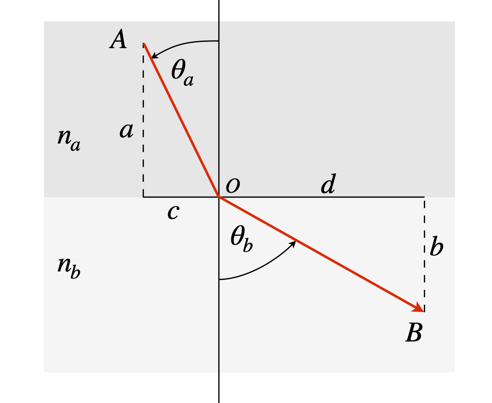

Questions 86 - 92¶
Lagrange multiplier questions
Q86¶
Find the shortest distance from the point (2, 2) to the line \(y = e^{-x}\).
Strategy: To use the Lagrange undetermined multiplier method, first decide what is the constraint and what the function.
Q87¶
Find the shortest distance from the origin to \(y^2 = (4 - x)^3/x\) , see Fig. 17.
Exercise: Write a python worksheet to calculate the distance from the origin to any curve you choose. Test it on the examples and questions above.
Q88¶
(a) Using the Lagrange multiplier method, maximize the product \(ab\) with the constraint \(a^2 + b^2 = 1\).
(b) Illustrate your answer graphically.
Strategy: In this example, the variables are \(a\) and \(b\), not \(x\) and \(y\): change them to \(x\) and \(y\) if you find this easier.
Q89 Photon’s shortest path¶
Photons always take a path through a series of optical elements, of any description whatsoever, that minimizes the total time taken. Prove Snell’s law \(n_a \sin(\theta_a) = n_b \sin(\theta_b)\), by calculating the minimum time a photon takes to get from A to B when it crosses a boundary from one medium to another with refractive indices \(n_a\) and \(n_b\) and \(n_b \lt n_a\), as shown in Fig. 32. The speed of light in a medium is \(c/n\) where \(n\) is the medium’s refractive index. Use python/SymPy to do the calculation if you wish.

Figure 32. Illustrating Snell’s law. The refractive indices \(n_a \gt n_b\).
Strategy: The constraint is not mentioned, but as A and B are fixed, the constraint must be to make the horizontal distance \(c + d\) constant. It is not necessary to know this constant because when differentiated it becomes 0. If the vertical distance \(a + b\) was chosen as the constraint then it is found that \(\lambda\), the multiplier, disappears from the problem so this cannot be correct.
Q90 Entropy of mixing¶
The entropy of mixing different gases or solutions is \(\displaystyle S=-k_B\sum_{i=1}^n x_i\ln(x_i)\),
where \(x_i\) is the mole fraction of component \(i,\; k_B\) is Boltzmann’s constant, and n the number of species. Show that the maximum entropy of mixing of \(n\) species is \(S = k_B \ln(n)\).
Strategy: A thought experiment suggests that the most likely entropy is when each component is present with a mole fraction of 1/\(n\)th of the total if there are \(n\) species present in the mixture, since this is the most varied way the solution can be divided up into its components.
If there are two components, with mole fraction \(x_1\) and \(x_2\) and therefore \(x_2 = 1 - x_1\), the entropy is \(S = -k_B[x_1 \ln(x_1) + (1 - x_1)\ln(1 - x_1)]\). The minimum is found by differentiating, which produces \(\displaystyle \frac{dS}{dx_i} = -k_B[\ln(x_1) - \ln(1 - x_1)] = 0\), which has the solution \(x_1\) = 1/2 if the sum of the mole fractions add to unity which, by definition, they must. If there were \(n\) species this approach would become impossible, or at least very tedious, and therefore the Lagrange method is preferable.
Q91 Maximum entropy distribution¶
In the gas phase reaction \(\mathrm{ F + H_2 \to HF_v + H}\), the product HF is produced in a range of vibrational quantum states, only \(v\) = 0, 1, 2, 3 being energetically possible under the experimental conditions used. The fraction of HF molecules found in vibrational energy level \(v\) is \(x_v\) but these are subject to a constraint such that \(\displaystyle \sum_{n=1}^n x_v = 1\) where \(n\) is the total number of levels populated, which happens to be four in this experiment but of course could be different with different reactants.
The distribution of \(x_v\) vs \(v\) is expected to maximize the entropy; if this is the case what will the distribution be? This is the same as asking the question ‘what then will be the equation for \(x_i\)’? The vibrational contribution to the entropy (in units of \(k_B\)) is defined as \(\displaystyle S = -\sum_{v=0}n x_v \ln(x_v)\).
Strategy: First decide what the function to minimize or maximize is, and because there is a constraint use the Lagrange multiplier method. The \(Q\) function, equation (36), is \(Q = S - \lambda g\) where \(g\) is the constraint. The sum of fractional populations, \(x_v\) is unity and \(S\) is the entropy function.
Q92¶
Find the maximum and minimum of the function \(f (x, y, z) = 4x + 3y + 10z\) with the two constraints, \(x+y+z=1\) and \(x^2 +z^2 =1\).
Strategy: As there are two constraints there will be two undetermined multipliers; if these are \(\lambda\) and \(\mu\) then the \(Q\) equation is \(Q = f + \lambda g + \mu h\), where the constraints are the functions \(g\) and \(h\) which are the equations in \(x,\; y\) and \(z\). Differentiation has also to be performed in \(x,\; y\) and \(z\).